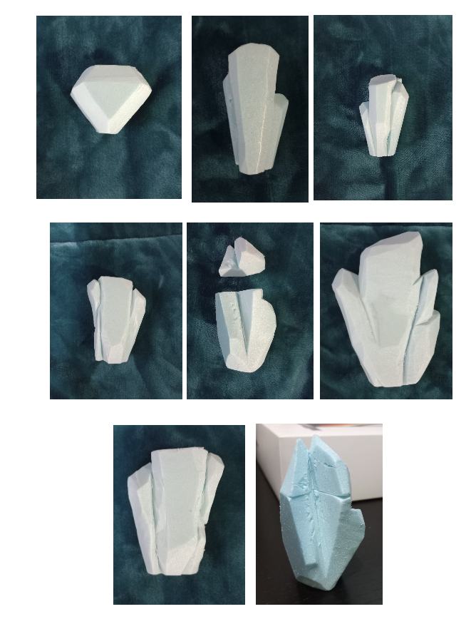
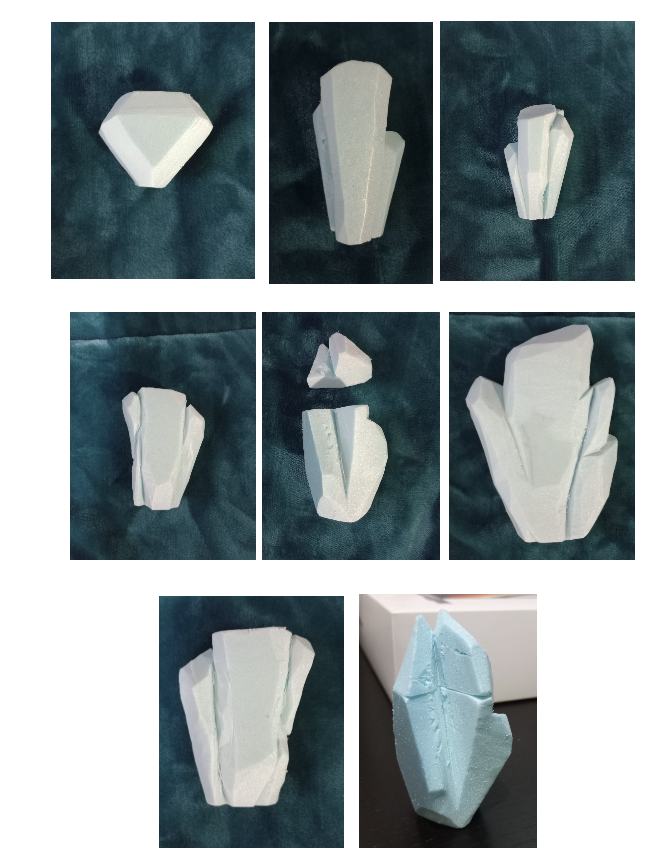
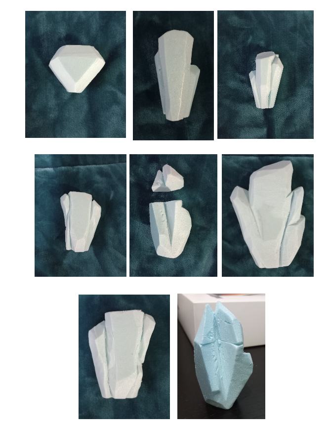

This project was done for the company Vougue, where they challenged us to create
a brand of shower gel aswell the bottle itself.
For the creation of the shower gel, we first had to be given an concept that ended to be classical, rich and secretive.
After that the apropriate move is to find everything associated with the concept and then gather information about the same.
Moving forward, the plan becomes more coherent, since we start to create a moodboard with everything we want our product to resemble or transmit.
After that was straight into idealization and creation of the shower gel.

After establishing the final look of the bottle, the design of the brand needed to be done.
Therefore, creating logos, images that fit into our concept was needed.
After we achieve the desired logo, we printed the logos and 3d printed the shower gel to have a phisical
product that we can evaluate.
And that was a resumed process of how me and colleagues created an life size shower gel
that could be used by one of the most known companies in the world.


 
